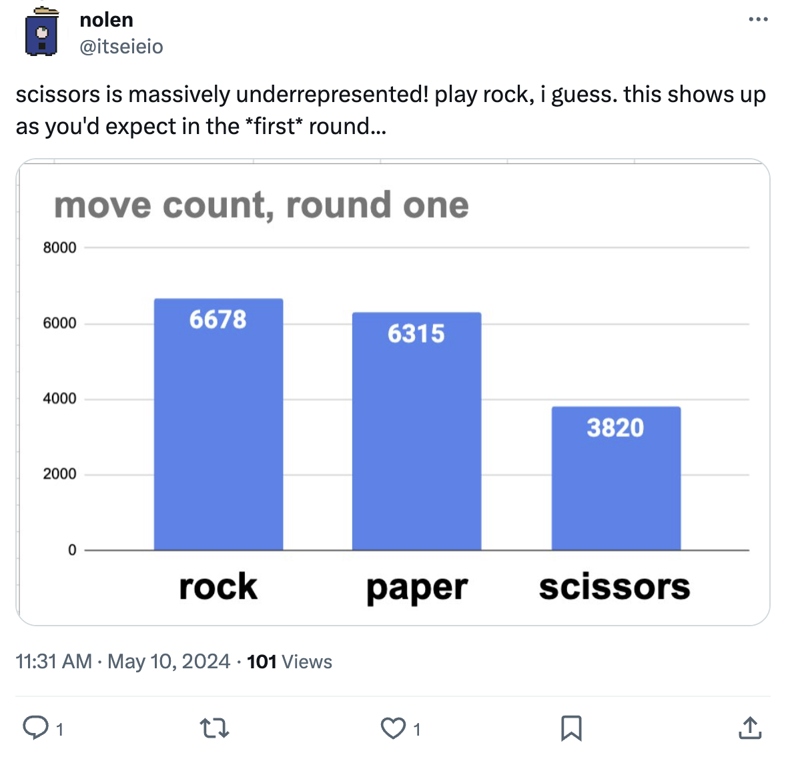
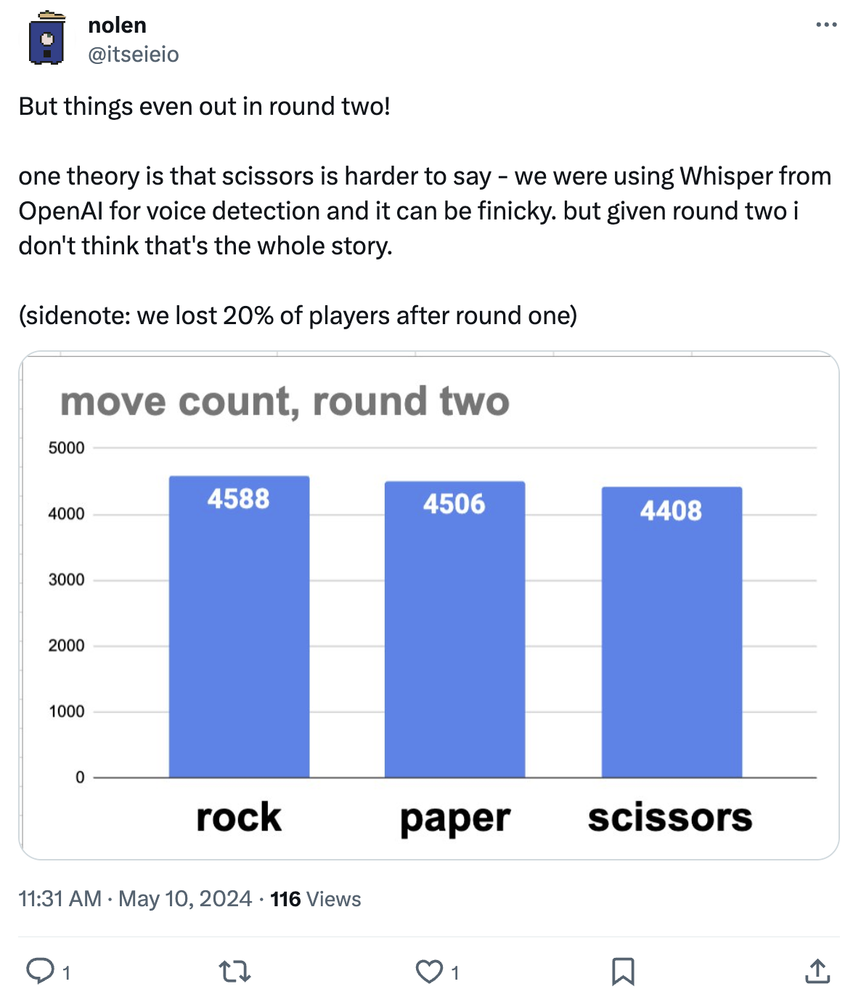

#3 Rock Paper Scissors: Reading 1
Rock defeats scissors, scissors defeats paper, and paper defeats rock. You get 1 point for winning, -1 point for losing, and 0 points for ties.
The goal of this challenge is to focus on tracking opponent distributions and how to respond to them.
Game Theory
RPS is a zero-sum game and the payouts are symmetrical as follows:
| Player 1/2 | Rock | Paper | Scissors |
|---|---|---|---|
| Rock | (0, 0) | (-1, 1) | (1, -1) |
| Paper | (1, -1) | (0, 0) | (-1, 1) |
| Scissors | (-1, 1) | (1, -1) | (0, 0) |
The Nash Equilibrium strategy is to play each action \(r = p = s = 1/3\) of the time.
Playing this strategy means that whatever your opponent does, you will breakeven! You can see this interactively below:
Types of Opponent Adaptation
- Offline: In Kuhn Poker, we discussed building an agent based on weights that play optimally against a specific fixed opponent or group of opponents.
- Online: Now in this challenge we want to think about online opponent adaptation. Suppose now that we don’t know how our opponent is going to play, but want to build an agent that adapts to them in real time as the match is going on.
Counterfactual Regret Minimization
As we think about solving larger games, we start to look at iterative algorithms.
The most popular method for iteratively solving poker games is the Counterfactual Regret Minimization (CFR) algorithm. CFR is an iterative algorithm developed in 2007 at the University of Alberta that converges to Nash equilibrium in two player zero-sum games.
(Note: The handout solver does not exactly use CFR. You can make updates to the solver however you would like, including modifying it to become CFR.)
What is a counterfactual? Here’s an example:
Actual event: I didn’t bring an umbrella, and I got wet in the rain
Counterfactual event: If I had brought an umbrella, I wouldn’t have gotten wet
Regret and Strategies
A strategy at an infoset is a probability distribution over each possible action.
Regret is a measure of how much each strategy at an infoset is preferred and is used as a way to update strategies.
For a given P1 strategy and P2 strategy, a player has regret when they take an action at an infoset that was not the highest-EV action at that infoset.

What is the regret for each action?
| Action | Regret |
|---|---|
| A | |
| B | |
| C |
If taking a uniform strategy at this node (i.e. \(\frac{1}{3}\) for each action), then what is the expected value of the node?
In poker games, the regret for each action is defined as the value for that action minus the expected value of the node. Give the regret values for each action under this definition.
Each infoset maintains a strategy and regret tabular counter for each action. These accumulate the sum of all strategies and the sum of all regrets.
In a game like Rock Paper Scissors, there is effectively only one infoset, so only one table for strategy over each action (Rock, Paper, Scissors) and one table for regret over each action (Rock, Paper, Scissors).
Regrets are linked to strategies through a policy called regret matching.
Regret Matching
We decide our strategy probability distribution using regret matching, which means playing a strategy that normalizes over the positive accumulated regrets, i.e. playing in proportion to the positive regrets.
Example from Marc Lanctot’s CFR Tutorial:
Game 1: Choose Rock and opponent chooses Paper
- Lose 1
- Rock: Regret 0
- Paper: Regret 1
- Scissors: Regret 2
Next Action: Proportional \[ \begin{pmatrix} \text{Rock} & 0/3 = 0 \\ \text{Paper} & 1/3 = 0.333 \\ \text{Scissors} & 2/3 = 0.667 \end{pmatrix} \]
Game 2: Choose Scissors (With probability \(2/3\)) and opponent chooses Rock
- Lose 1
- Rock: Regret 1
- Paper: Regret 2
- Scissors: Regret 0
Cumulative regrets:
- Rock: 1
- Paper: 3
- Scissors: 2
Next Action: Proportional \[ \begin{pmatrix} \text{Rock} & 1/6 = 0167 \\ \text{Paper} & 3/6 = 0.500 \\ \text{Scissors} & 2/6 = 0.333 \end{pmatrix} \]
Regret matching definitions:
- \(a\) is actions
- \(\sigma\) is strategy
- \(t\) is time
- \(i\) is player
- \(R\) is cumulative regret
\[ \sigma_i^t(a) = \begin{cases} \frac{\max(R_i^t(a), 0)}{\sum_{a' \in A} \max(R_i^t(a'), 0)} & \text{if } \sum_{a' \in A} \max(R_i^t(a'), 0) > 0 \\ \frac{1}{|A|} & \text{otherwise} \end{cases} \]
This is showing that we take the cumulative regret for an action divided by the cumulative regrets for all actions (normalizing) and then play that strategy for this action on the next iteration.
If all cumulative regrets are \(\leq 0\) then we use the uniform distribution.
If cumulative regrets are positive, but are are \(<0\) for a specific action, then we use \(0\) for that action.
In code:
def get_strategy(self):
#First find the normalizing sum
normalizing_sum = 0
for a in range(NUM_ACTIONS):
if self.regret_sum[a] > 0:
self.strategy[a] = self.regret_sum[a]
else:
self.strategy[a] = 0
normalizing_sum += self.strategy[a]
#Then normalize each action
for a in range(NUM_ACTIONS):
if normalizing_sum > 0:
self.strategy[a] /= normalizing_sum
else:
self.strategy[a] = 1.0/NUM_ACTIONS
self.strategy_sum[a] += self.strategy[a]
return self.strategyAfter using regret matching and after many iterations, we can minimize expected regret by using the average strategy at the end, which is the strategy that converges to equilibrium.
If two players were training against each other using regret matching, they would converge to the Nash Equilibrium of \(1/3\) for each action using the average strategy in Rock Paper Scissors.
RPS Regret Matching Experiment
Here we show that regret matching converges only using the average strategy over 10,000 iterations:
The bottom shows both players converging to \(1/3\), while the top shows Player 1’s volatile current strategies that are cycling around.
Suppose that your opponent Player 2 is playing 40% Rock, 30% Paper, and 30% Scissors. Here is a regret matching 10,000 game experiment. It shows that it takes around 1,600 games before Player 1 plays only Paper (this will vary).
We see that if there is a fixed player, regret matching converges to the best strategy.
But what if your opponent is not using a fixed strategy? We’ll talk about that soon.
Iterating through the Tree
The core feature of the iterative algorithms is self-play by traversing the game tree over all infosets and tracking the strategies and regrets at each.
From above, we know how to find the strategy and regret in the simple Rock Paper Scissors environment.
In poker:
Strategies are determined the same as above, through regret matching from the previous
regretvalues at the specific information set for each actionCFR definitions:
- \(a\) is actions
- \(I\) is infoset
- \(\sigma\) is strategy
- \(t\) is time
- \(i\) is player
- \(R\) is cumulative regret
- \(z\) is a terminal node
- \(u\) is utility (payoffs)
- \(p\) is the current player who plays at this node
- \(-p\) is the the opponent player and chance
- \(v\) is counterfactual value
Counterfactual values are effectively the value of an information set. They are weighted by the probability of opponent and chance playing to this node (in other words, the probability of playing to this node if this player tried to do so).
Counterfactual value: \(v^\sigma (I) = \sum_{z\in Z_I} \pi^{\sigma}_{-p}(z[I])\pi^{\sigma}(z[I] \rightarrow z)u_p(z)\)
\(\sum_{z\in Z_I}\) is summing over all terminal histories reachable from this node
\(\pi^{\sigma}_{-p}(z[I])\) is the probability of opponents and chance reaching this node
\(\pi^{\sigma}(z[I] \rightarrow z)\) is the probability of playing from this node to terminal history \(z\), i.e. the weight component of the expected value
\(u_p(z)\) is the utility at terminal history \(z\), i.e. the value component of the expected value
Instantaneous regrets are based on action values compared to infoset EV. Each action EV then adds to its
regretcounter:- \(r^t(I,a) = v^{\sigma^t}(I,a) - v^{\sigma^t}(I)\)
Cumulative (counterfactual) regrets are the sum of the individual regrets:
- \(R^T(I,a) = \sum_{t=1}^T r^t(I,a)\)
Alternatives/Updates to Original Algorithm
CFR+ variation such that regrets can’t be \(\leq 0\)
Linear CFR such that regrets are weighted by their recency
Sampling
- External: Sample chance and opponent nodes
- Chance: Sample chance only
- Outcome: Sample outcomes
Data: Talk Paper Scissors
eieio games made a Rock Paper Scissors over voice game in which players call a phone number and get matched up with another player for a 3 game RPS match.
They published their 40,000 round data on X:
 Overall: R 37.2%, P 35.4%, S 27.4%
Overall: R 37.2%, P 35.4%, S 27.4%
 Round 1: R 39.7%, P 37.6%, S 22.7%
 Round 2: R 34.0%, 33.4%, 32.6%
 Round 3: R 37.2%, 34.7%, 28.1%
Round 3: R 37.2%, 34.7%, 28.1%